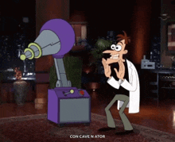

ADHILA ASLAM
welcome to my y2k style portfolio
feel free to look around
scroll down for time travelling
High Achiever - Physics Major - Engineer and obv Design
What's Hot:
ABOUT ME 🌎
Hey I'm Adhila Aslam. I’m an Engineering Physics student from IIT Patna (so yeah, I guess you could say I’m basically a math major too—kidding… kind of). I’ve always been drawn to Y2K- style so that would pretty much explain this portfolio, yes this is the only one i have + it wasn't mandatory it is just for fun
I’m incredibly passionate about robotics and AI (but kind of scared of it as well). I was very active in my college robotics club, working on both the hardware and perception side, and ended up being a coordinator in my 3rd year (mostly because my inner child always thought robotics is engineering). I’ve worked on projects like Inferring Property Valuation from Vehicle Recognition in Satellite Imagery, Fall Detection using Raspberry Pi, and Singular Brain: Scalable Multi-Robot Swarm Intelligence for Warehouse Automation, along with a few other cool ones. As well as product side like product teardowns and consulting. You can find all of them in my github hopefully its a public repo(good luck finding my github link here). Lately, I’ve been getting interested in autonomous vehicles and ADAS features—mostly because I started driving and all of that just looked cool. I haven’t had the time to dive deep into it yet, but I’m planning to explore it after college. If you want to talk about any of this, message me on LinkedIn.
On the software side, I’m very strong in DSA and aiming for roles in software engineering or machine learning—coming from a quantitative field like physics, I like solving problems that actually make you think. That’s the kind of work I am gonna show up for. Growing up watching Phineas and Ferb, I’ve always wanted to build ridiculously cool things—maybe useless, but still cool. So later when I'm bored or jobless that’s what I am planning to do.
